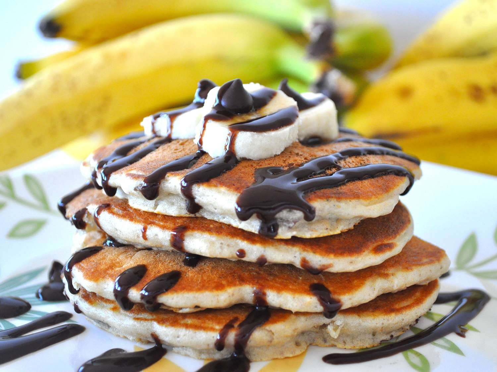

Menu
> Chunky Monkey Pancakes
If you’re the type of person who thinks breakfast should taste like
dessert, these are for you. They’re fluffy, loaded with gooey chocolate
chips, and have that perfect hit of sweetness from the bananas. They're
a total hit for a lazy Sunday morning or whenever you need a little
extra motivation to get out of bed.

Ingredients
- 1 cup all-purpose flour
- 2 teaspoons baking powder
- 1 teaspoon baking soda
- ¼ teaspoon salt
- ¾ cup skim milk
- 3 tablespoons butter, melted
- 2 eggs
- 1 tablespoon white sugar
- 1 teaspoon vanilla extract
- 1 large banana, diced
- ½ cup miniature semisweet chocolate chips
- ¼ cup chopped pecans
- cooking spray
Steps
-
Combine flour, baking powder, baking soda, and salt in a large bowl.
Set bowl aside.
-
In a separate bowl, whisk together the skim milk, melted butter, eggs,
sugar, and vanilla.
-
Make a well in the center of the dry ingredients and stir in the wet
ingredients, being careful not to over mix the batter.
- Gently fold in the banana, chocolate chips, and nuts.
-
Heat a large skillet over medium heat, and coat with cooking spray.
-
Pour 1/4 cupfuls of batter onto the skillet, and cook until bubbles
appear on the surface.
- Flip with a spatula, and cook until browned on the other side.